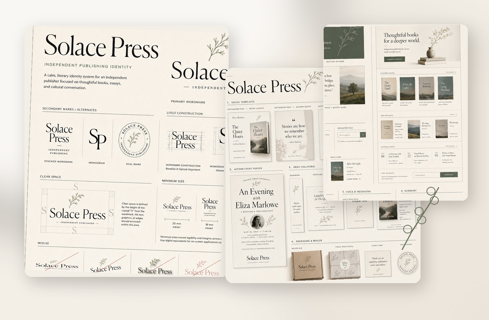

Recognizable identity
A flexible family of marks creates continuity across covers, spines, packaging, social thumbnails, events, and institutional communication.
Self-directed concept · Brand identity & visual communication
A complete identity and communication system for an independent publisher—designed to remain recognizable across books, campaigns, events, packaging, presentations, and digital experiences.
Solace Press is a fictional portfolio project. The brand strategy, applications, and production direction are proposed rather than commissioned or commercially launched.

A system, not a single logo
Solace Press is conceived as an independent publisher of literary fiction, essays, poetry, and cultural criticism. The design challenge was to create an identity that felt thoughtful and tactile without becoming nostalgic, academic, or visually fragile.
The project therefore extends beyond a wordmark. It defines a family of marks, typography, composition, photography, illustration, templates, campaign behavior, production rules, and digital components that can support an evolving publishing list.
A flexible family of marks creates continuity across covers, spines, packaging, social thumbnails, events, and institutional communication.
A restrained type, grid, image, and color system supports varied authors and genres without making every title feel identical.
Templates, editable content zones, clear naming, export variants, and quality-control rules make future launches easier to produce.
Typography, composition, image treatment, social assets, posters, and print collateral.
Identity architecture, usage rules, voice, art direction, templates, and consistency.
Website hierarchy, reusable components, cards, navigation, newsletter, and email direction.
Format adaptation, bleeds, resolution, versioning, exports, handoff, and final review.
Production note: The boards demonstrate the proposed visual system and applications. Before commercial use, the identity would be rebuilt as vector masters, font licenses confirmed, accessibility reviewed, print pieces proofed, and native templates packaged in the appropriate production software.
Positioning and voice
The brand is positioned for readers who value thoughtful editing, enduring objects, and cultural conversation. Its tone needed to feel calm and intimate while retaining enough confidence to promote new titles, events, authors, and ideas.
Solace Press creates quiet space for stories that linger—books that open minds, invite reflection, and deepen cultural understanding.
Language and composition create space for attention rather than forcing urgency.
Tactile materials, natural imagery, and human stories keep the identity emotionally accessible.
Editorial typography and careful pacing signal the publisher’s relationship to reading and ideas.
Clear hierarchy and restrained systems prevent the brand from feeling ornamental or historical.
Identity architecture
The identity is designed as a family rather than a single immutable logo. Each mark has a specific role: institutional recognition, editorial hierarchy, constrained digital use, tactile publishing details, or event and packaging applications.
Used on covers, catalogs, presentations, websites, press materials, and communications where the full name should lead.
Supports narrow formats, book spines, portrait collateral, social posts, and layouts where the horizontal wordmark becomes too small.
Designed for profile images, browser icons, pagination, navigation, and quiet secondary branding.
Applied to stickers, embossing, tissue, endpapers, packaging, bookmarks, event materials, and collectible details.
Typography, grid, imagery, and illustration
The visual system combines expressive display typography with a neutral functional voice. Generous spacing, limited colors, controlled image crops, and a small illustration vocabulary allow the brand to feel consistent while adapting to books, data, events, campaigns, and interface components.
A high-contrast serif carries titles and emotional statements; a neutral sans supports body text, captions, labels, specifications, and interface controls.
A twelve-column layout and repeatable spacing rhythm support asymmetry, centered statements, editorial spreads, social posts, and digital modules.
Natural light, restrained contrast, tactile still life, intimate portraiture, and contemplative spaces communicate the world surrounding the books.
Hand-drawn botanical motifs and simple line icons identify categories, create tactile moments, and reduce reliance on repeated photography.
Typography licensing: The guideline boards reference Canela Display and Suisse Intl as proposed type families. A commercial implementation would require appropriate licenses or equivalent licensed substitutions before release.
Books and seasonal storytelling
Covers share hierarchy, publisher placement, material tone, and spine logic, but each title receives its own dominant color, typographic composition, and illustration behavior.
Communication in practice
Applications are organized by communication purpose rather than treated as a wall of decorative mockups. Each artifact has a different reading distance, content load, production constraint, and audience action.
Title hierarchy, series recognition, spine behavior, seasonal browsing, and bookseller information.
Book announcements, author quotes, recommendations, stories, event frames, and reusable templates.
Author-event posters, invitations, bookmarks, thank-you cards, and one-page press sheets.
Mailer box, tissue, seal, insert card, sticker, label, and small branded touchpoints.
From identity to usable system
The presentation and digital directions extend the brand through hierarchy and reusable modules—not by copying the same composition into every format.
The proposed presentation system supports publisher introductions, seasonal lists, sales meetings, author partnerships, cultural programming, and internal communication.
The digital system organizes featured books, new releases, authors, events, journal content, and newsletter subscription while preserving the calm visual voice.
Information hierarchy, navigation, content architecture, reusable components, form behavior, responsive priorities, and accessibility—not formal user research or usability validation.
Designed to be continued by a team
A commercial version of Solace Press would separate protected brand elements from editable content, define output specifications, and provide files that designers, marketers, editors, and production partners could understand without rebuilding the system.
Define trim, bleed, safe area, color profile, paper assumptions, effective resolution, finishing, and proof requirements for each artifact.
Maintain platform dimensions, safe zones, thumbnail legibility, responsive crops, accessible contrast, and optimized exports.
Lock identity and spacing rules while leaving titles, images, dates, metadata, calls to action, and campaign fields editable.
Package vector marks, linked assets, font documentation, master templates, export presets, usage notes, and archived versions.
Solace_Press/ ├── 01_Brand_Masters/ │ ├── Logos/ │ ├── Illustrations/ │ ├── Icons/ │ └── Guidelines/ ├── 02_Publishing/ │ ├── Covers/ │ ├── Catalogs/ │ └── Press_Sheets/ ├── 03_Campaigns/ │ ├── Social/ │ ├── Events/ │ └── Email/ ├── 04_Print_Packaging/ ├── 05_Presentations/ ├── 06_Web_Direction/ └── 07_Exports_Archive/
SolacePress_Wordmark_Primary_Black.ai
SolacePress_BookCover_QuietHours_v04.indd
SolacePress_Catalog_Spring2026_Review_v03.pdf
SolacePress_IG-Feed_QuietHours_Launch_01.png
SolacePress_AuthorEvent_Poster_18x24_Print.pdf
SolacePress_SeasonalDeck_v05_Client.pptx
What the project proves
Solace Press demonstrates how one visual idea can become an operating system for publishing and communication. The brand remains recognizable because typography, spacing, crop behavior, voice, and material tone repeat—even when the artifact, audience, and content change.
A complete identity architecture applied across publishing, campaigns, events, packaging, presentations, and digital communication.
The quiet aesthetic could become too delicate or low-contrast without disciplined hierarchy, proofing, accessibility review, and production testing.
Rebuild the marks and templates in native production tools, test the system with new title genres, and prototype a responsive storefront.
The four-page PDF contains the identity, visual system, application family, presentation template, website direction, components, and messaging system.